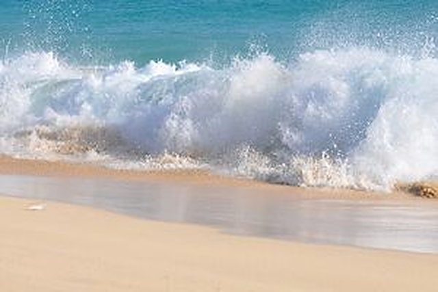

About 800 m
Hibberdene main beach
A clean little swimming beach with lifeguards, across the main road in front of the shops. It can be a bit rough, but it is very convenient.
Photos & map
Beaches on the doorstep, and family days out up and down the coast: our own list.
Hibberdene is a quiet beach town in the middle of the South Coast, so the best days out are a drive away in either direction. A longer list of things to do, including hikes, is at reception: just ask. Distances are approximate, from the lodge.
A clean little swimming beach with lifeguards, across the main road in front of the shops. It can be a bit rough, but it is very convenient.
Photos & mapThe next closest, with lifeguards. No river mouth, so the water is clean, and there is a small tidal paddle pool for the kids. No shops, and quieter on Christmas Day and New Year's Day.
Photos & mapA quiet beach with a tidal pool, and the conservancy coffee shop above it serving reasonable, tasty meals.
Photos & mapA very nice, child-friendly beach with a big grass area.
Photos & mapHorse riding for all ages: lessons, or outrides on the beach or in the forest. Turn right by the old abandoned convent and ask for Sheralee.
Photos & mapA walk-through house built completely upside down: a quirky photo stop the kids love.
Photos & mapMost of the night clubs on the coast. Not the Margate of old, but still a good place to visit and to fish.
Photos & mapWaffle House, Mac Banana, Eland Resort, Oribi Gorge and Wild 5 Activities (zip lines and more): all on our must-see list.
Photos & mapGenerally a must for children over the holidays.
Photos & map11 slides and water tubes on Amanzimtoti beach. An entrance fee applies.
Photos & mapA similar water world at the casino resort, but over the holidays access is often limited by numbers, and sometimes to hotel guests only.
Photos & mapWe are fairly central to all the South Coast courses, from Umkomaas to the Wild Coast Sun. There is a brochure at reception.
Photos & mapDurban and Port Edward, each about an hour away in opposite directions.
Photos & mapDiving and snorkelling at Umkomaas and Rocky Bay, with Aliwal Shoal for shark cage and baited shark dives; more experienced diving at Protea Banks.
Photos & mapBuy your fishing licence at the post office. Ask us for the local spots.
Photos & mapA small Pick n Pay, Superspar, Tops, hairdressers, a few beach stores and an all-sorts shop. Meat and alcohol prices tend to go up in December.
Photos & mapPick n Pay, Woolworths, a few restaurants and shops, and small cinemas that fill up on rainy days.
Photos & mapJust up the road from Shelly Beach Mall: Checkers, Food Lover's Market, and restaurants such as Ocean Basket, Mugg & Bean and Milky Lane.
Photos & mapPick n Pay, Woolworths, Dis-Chem, clothing stores and a Wimpy. An easier trip in holiday traffic.
Photos & mapAll the big names, restaurants, several cinemas, ten-pin bowling, go-karts and an arcade, 45 minutes away on the freeway. Makro and a large Pick n Pay hyper are just along the road. Our choice in peak season.
Photos & mapAttractions may vary and change, and we cannot guarantee them: check opening times and access before you go, and ask us for tips. Christmas holiday traffic can take more than an hour at peak, even on the highway, so leave early.
Live availability and instant confirmation online, or ask us anything on WhatsApp.